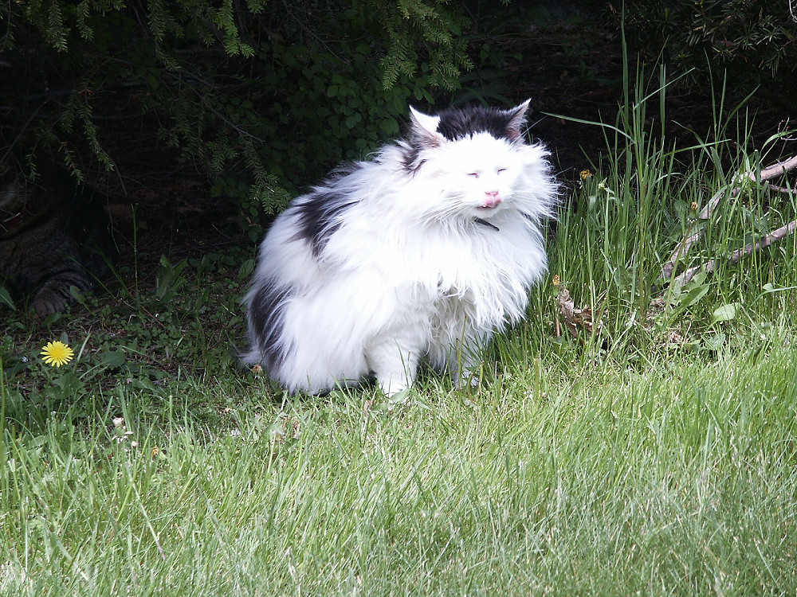

Johnnie and Oberta Baker's Photo Album Previous Gallery Next
|

Anit-Sylvanius was an old cat. Unfortunately, he often laid down right outside the garage doors. Normally, when we started up the car, he would move out of the way. Unfortunately, on the day we were rushing to get to our airflight at Akron-Canton, Anti (as he was called) failed to move and the car hit him. The vet thought he was OK - no broken bones, but he died two days later. May he rest in peace -- he was a loving cat. |